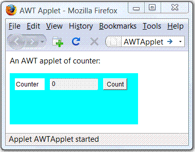
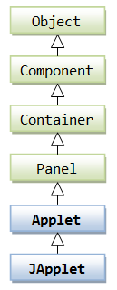
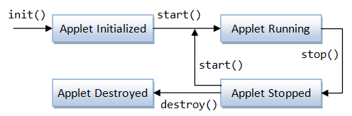
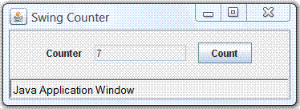

Applets
An applet is a Java program, which can be downloaded from a remote server and executes inside the web browser of the local machine. Applets are executed inside the browser via the so-called "Java Plug-in", which is a JRE capable of running Java applets in a secure manner (just like most web browsers have plug-ins for running flash, JavaScript, VBScript and other programs).
Hello-World Applet
Let's begin by writing an applet that says "Hello, world!" inside the browser.
1 2 3 4 5 6 7 8 9 10 11 12 13 14 15 |
import java.applet.Applet; import java.awt.Color; import java.awt.Font; import java.awt.Graphics; /** * First Java Applet to say "Hello, world" on your web browser */ public class HelloApplet extends Applet { // save as "HelloApplet.java" public void paint(Graphics g) { setBackground(Color.CYAN); // set background color g.setColor(Color.BLACK); // set foreground text color g.setFont(new Font("Times New Roman", Font.BOLD, 30)); // set font face, bold and size g.drawString("Hello, world", 20, 80); // draw string with baseline at (20, 80) } } |
Compile the applet using the JDK compiler "javac.exe":
> javac HelloApplet.java
You CANNOT run the applet using JDK's Runtime "java.exe".
Applet is a graphic program that runs inside a web browser, using the web browser's Java plug-in JRE.
Applet is embedded in an HTML page (in much the same way as images, audios, videos and other programs are embedded in an HTML file).
To run an applet, you need to create a HTML file, which embeds the applet.
Use a text editor to create the following HTML file and save it as "HelloApplet.html" (or any filename of your choice). Note that HTML, unlike Java, is not case sensitive, and places no restriction on the filename.
1 2 3 4 5 6 7 8 9 10 11 |
<html>
<head>
<title>Hello-World Applet</title>
</head>
<body>
<h3>My first Java applet says:</h3>
<applet code="HelloApplet.class" width="400" height="150"
alt="Error loading applet!">
</applet>
</body>
</html>
|
You can run the applet by loading the HTML file into a web browser.
Double-click the "HelloApplet.html" in Windows Explorer (or from the browser, select "file" menu ⇒ "open" ⇒ "browse" and select "HelloApplet.html", or drag the HTML file into the browser).
Applet Security
Starting from JRE 1.8.0, you need to configure the "Java security" to run the applets:
- Control Panel ⇒ Java ⇒ Security.
- Check "Enable Java content in the browser".
- Set the security level to high.
- Add site to "Exception Site List": Click "Edit Site List" ⇒ Add ⇒ Enter site URL, e.g., file:///D:/ (for local D drive), http://www.ntu.edu.sg/home/ehchua/programming/ (my programming site).
"appletviewer" Utility
JDK provides a utility called "appletviewer.exe" for testing applet, in the early days of Java. Since web browser is everywhere nowadays, you should use a web browser to see the actual effect instead. You should try on all the common browsers (such as IE, firefox, chrome, safari) if you want to put your applet in production. appletviewer processes only the <applet> tag, and ignores all other tags in the HTML file. To use the appletviewer, issue the following command:
> appletviewer HelloApplet.html
Dissecting the "HelloApplet.java"
- If you are familiar with GUI programming, you will find the applet familiar, we will explain the details in the later section.
- Lines 10 and 11 set the background and foreground color to cyan and black, respectively.
- Line 12 sets the text font to "Times New Roman", 30-point and bold.
- In Line 13, we use the method
drawString()of theGraphicsclass to draw theString"Hello, world!" starting at baseline co-ordinates of (20, 80) on the applet display area inside the web browser.
Dissecting the "HelloApplet.html"
- HTML uses markup tags for formatting and hyper-linking documents; and embedding other entities such as images, audios, videos and programs.
<html>(line 1) and</html>(line 10) are a pair of container tags enclosing the entire HTML script. Container Tags consist of a pair of start-tag (in syntax of<tag-name>) and end-tag (in syntax of</tag-name>), and contain data between the tags.- An HTML script is divided into two sections: a HEAD section enclosed by
<head>(line 2) and</head>(line 4) and a BODY section enclosed by<body>(line 5) and</body>(line 9). - In the HEAD section, you can give a title for the page (enclosed within
<title>and</title>in line 3). The title will be shown on the browser's title bar. - In our body section, the
<p>and</p>tags (line 6) contain a paragraph. The<applet>and</applet>tags (lines 7 to 8) embed a Java applet program. - In the
<applet>start-tag, attribute "code" is used to specify the applet's class file; attributes "width" and "height" are used to specify the applet display area inside the browser's window (in this example, 400×150 pixels). - HTML is not case sensitive.
More Applets (in JDK's Demo)
Try the "demo" applet provided by the JDK (under directory demo\applets"). Since JDK 1.7, you need to download the demo separately. For examples, "Clock", "MoleculeViewer", "SortDemo", and "TicTacToe". You may study these applets' source files and the associated HTML files.
HTML's <Applet> Tag
HTML provides an <applet>...</applet> container tag for embedding Java applet, with the following attributes:
code="JavaClassName": Specifies the applet class name, with the ".class" extension.width,height: Specify the width and height of the applet's display area inside the browser.alt: (optional) alternate text if the applet fails to be displayed.codebase: (optional) specifies the base path of the applet's class. The default base path for the applet is the same path as the HTML file.archive: (optional) specifies the JAR file that contains the applet classes. If your applet involves more than one classes, it is common and more efficient to jar (i.e., zip) them together into a single JAR file for distribution.
The <applet> tag is deprecated in HTML 4.01 in favor of a more general <object> tag. However, it is still commonly-used today and widely supported by the web browsers.
You can use <param> tag to pass parameters into applet.
Jaring-Up Classes
If your applet involves more than one classes, it is easier and more efficient to jar them up into a single file for distribution, as jar compresses the file size (using the ZIP algorithm).
For example, suppose that our applet has two classes: a main class called HelloAppletAgain.java and a helper class called HelloAppletHelper.java.
/** Main class */ import java.applet.Applet; import java.awt.*; public class HelloAppletAgain extends Applet { public void paint (Graphics g) { setBackground(Color.GREEN); // set background color g.setColor(Color.BLUE); // set foreground text color g.drawString((new HelloAppletHelper()).getMessage(), 5, 30); } }
/** Helper class to return a greeting message */
public class HelloAppletHelper {
public String getMessage() {
return "Hello, world again!";
}
}
You can jar the classes together using the JDK utility "jar.exe" from cmd shell. Alternatively, IDE like Eclipse/NetBeans can create a jar file easily.
> jar -cvf HelloAppletAgain.jar *.class
The following HTML script starts the applet. The attribute "archive" specifies the location of the jar file.
<html>
<head><title>Java Applet</title></head>
<body>
<h2>My Java Applet says:</h2>
<applet
code="HelloAppletAgain.class"
archive="HelloAppletAgain.jar"
width="400" height="100"
alt="Error loading applet"></applet>
</body>
</html>
Read "Creating JAR File" and "Using JAR File for Deployment" for more discussion on JAR file.
More On Applets
Applets are mobile programs. In the old days, we used to correct the data in magnetic tape (or punch cards) and bring the data to the computer for processing. With mobile program, you can send the program (which is much smaller) down to the data site and processed the data locally. This is possible as Java program are portable and run on all platforms.
With the availability of mobile programs such as applets, why buy word processor, spreadsheet or some expensive software? Just download an applet, use it and discard after use!
There are two problems. Firstly, applets take times to download over the network and also take times to startup (this is not really a problem today). Secondly and more importantly, applets are alien programs that run on your local machine. What stops someone from writing an applet that compromises your system - or worse, damages your machine? Nobody today will run an alien program in the local machine with all kinds of computer viruses running around.
There is strict security in place in the built-in JVM for running applets to prevent the applets from compromising your system.
In JDK 1.0, applets are considered as "non-trusted" codes and run inside a so-called sand box with no access to local file system and network resources. Applets cannot do nasty outside the sandbox. These includes:
- Applets cannot read or write local files.
- Applets cannot execute local programs.
- Applets cannot connect to any machine on the network except the machine from which they are downloaded.
The "sandbox" model places too much restriction on what applets can do, which resulted in a classical catch-22 situation: Applets are powerful Java programs that can perform powerful tasks. They are so powerful that may damage your local machine. Security is therefore put in place so that they cannot do damages. This limits the power and usefulness of applets and renders applets useless. Applets are not commonly used today.
JDK 1.1 introduced the notion of "trusted" codes. You can package an applet using JAR file, and sign the JAR file with your digital signature (much like signing a document or a cheque using a pen). The digital signature authenticates the source of the applets. The recipients of the applet will be presented with the digital certificate of the signer. They can then decide whether to trust the signer and run the applet or reject the applet. If a recipient accepts the applet, applet has full access to the local file system and network resource, just like any local Java application.
From JDK 1.2 onwards, JVM employs a security manager, which manages the system security based on a customizable security policy file. You can grant an applet specific permissions (such as reading local file) and deny other permissions (such as writing local file) by tailoring the security policy file. In other words, you have control of the kinds of accesses to be granted from JDK 1.2. This is in contrast of "no-access sandbox" in JDK 1.0 and "full-access" for trusted-applet in JDK 1.1.
Applets can be used to create dynamic and interactive web contents. Applets made Java popular in the early days. However, their usage is limited in the Internet environment. The security restrictions imposed on applets severely limit their functionality. JavaScript and Flash are more popular today for creating dynamic web contents on the client side nowadays. The power of Java has shifted to the server-side programming especially in the enterprise JavaEE environment and for the embedded wireless devices in the JavaME. Applets could still be useful in an Intranet environment, where network bandwidth and granting for access permission is not a concern.
JDK 1.4 introduced a deployment technology called Java Web Start to simplify the deployment of Java applications over the network. With Java Web Start, you can deploy a full-feature Java application (unlike applets, which run inside a browser) over the network. The downloaded application will be "cached" inside your local machine for subsequent re-uses. Upon subsequent activation, the Java Web Start checks if there is an update to the cached application. It downloads the newer version if there is one; otherwise, it launches the cached copy.
JDK 1.6 Update 10 provides many improvements on Applet. It unifies the deployment of Applet and Web Start Apps (called Rich Internet Applications). I shall describe in the later section.
AWT Applet
 I assume that you are familiar with GUI programming (otherwise, read the relevant sections).
- A GUI application extends from
java.awt.Frame(AWT) orjavax.swing.JFrame(Swing). An applet's top-level container isjava.applet.Applet(AWT) orjavax.swing.JApplet(Swing). The class hierarchy ofAppletandJAppletis as shown in the class diagram. - Applet does not have constructor. Instead, we override the
init()method to initialize the GUI display when the applet is loaded into the web browser.
Example: AWTAppletCounter
Let's write a simple counter applet via AWT's java.applet.Applet, as shown.
AWTAppletCounter.java
1 2 3 4 5 6 7 8 9 10 11 12 13 14 15 16 17 18 19 20 21 22 23 24 25 26 27 28 29 30 31 32 |
import java.applet.Applet; import java.awt.*; import java.awt.event.*; /** An AWT counter applet */ @SuppressWarnings("serial") public class AWTCounterApplet extends Applet { private TextField tfCount; // for displaying the counter value private int count = 0; // counter's value /** init() runs when the Applet is loaded */ @Override public void init() { setLayout(new FlowLayout(FlowLayout.CENTER, 10, 10)); setBackground(new Color(204, 238, 241)); // light blue add(new Label("Counter: ")); // Label tfCount = new TextField("0", 10); // TextField tfCount.setEditable(false); add(tfCount); Button btnCount = new Button("Count"); // Button add(btnCount); // Handling the button-click btnCount.addActionListener(new ActionListener() { @Override public void actionPerformed(ActionEvent e) { ++count; tfCount.setText(count + ""); } }); } } |
AWTAppletCounter.html
1 2 3 4 5 6 7 8 9 10 11 |
<html>
<head>
<title>An AWT Applet</title>
</head>
<body>
<p>An AWT applet of counter:</p>
<applet code="AWTAppletCounter.class" width="250" height="100"
alt="Error Loading Applet!">
</applet>
</body>
</html>
|
Swing JApplet
A Swing applet:
- Extends from
javax.swing.JApplet(instead ofjava.applet.Applet). - Use the Swing components in
javax.swing(instead of AWT components injava.awt). Swing components begin with a prefix "J", e.g.,JTextField,JButton, andJLabel. - Retrieve the content-pane
Containerfrom the top-level containerJApplet, viagetContentPane(), and add the components into the content-pane.
Example: SwingAppletCounter
Let's convert the previous AWTAppletCounter into Swing.
SwingAppletCounter.java
1 2 3 4 5 6 7 8 9 10 11 12 13 14 15 16 17 18 19 20 21 22 23 24 25 26 27 28 29 30 31 32 33 34 35 36 37 38 39 40 41 42 43 44 45 46 47 48 49 50 |
import java.awt.*; import javax.swing.*; import java.awt.event.*; /** A Swing Counter Applet */ @SuppressWarnings("serial") public class SwingCounterApplet extends JApplet { private JTextField tfCount; // for displaying the counter value private int count = 0; // counter's value /** init() runs when the applet is loaded */ @Override public void init () { try { // Run GUI codes in the Event-Dispatcher thread for thread safety // Use invokeAndWait() so that init() does not exit before GUI constructed SwingUtilities.invokeAndWait(new Runnable() { @Override public void run() { createGUI(); } }); } catch (Exception e) { e.printStackTrace(); } } /** Setup the GUI components */ private void createGUI() { Container cp = getContentPane(); // "this" JApplet gets content-pane cp.setLayout(new FlowLayout(FlowLayout.CENTER, 10, 10)); cp.setBackground(new Color(204, 238, 241)); cp.add(new JLabel("Counter: ")); tfCount = new JTextField("0", 10); tfCount.setEditable(false); cp.add(tfCount); JButton btnCount = new JButton("Count"); cp.add(btnCount); btnCount.addActionListener(new ActionListener() { @Override public void actionPerformed(ActionEvent e) { // Increase the count and show it in the TextField ++count; tfCount.setText(count + ""); } }); } } |
Similarly, provide an HTML file to run the applet.
Notes:
- A Swing's
JApplet, similar to other Swing's top-level containers such asJFrame, has a root pane, which contains the content-pane and an optional menubar. - We use
SwingUtilities.invokeAndWait()to run the GUI codes in the event-dispatcher thread (instead ofinvokeLater()forJFrameapplication).invokeAndWait()ensures thatinit()does not exit before the GUI codes completes, to avoid some subtle problems.
Java Console
Applets are run inside a web browser via the web browser's "Java Plug-in". This "Java Plug-in" provides a "Java Console", for managing the Java Plug-in and the applets. The system.out.print() and system.err.print() issued by applets are directed to this console. (Recall that to print on the applet, you need to use drawString() inside the paint() or paintComponent().)
To enable Java Console, goto "Control Panel" ⇒ "Java" ⇒ "Advanced" tab ⇒ "Java console" ⇒ "Show console". You should enable your Java console during applet development, so as to monitor the error messages.
Passing Parameters from HTML File into an Applet
You can pass parameters into an applet via the <param name="paramName" value="paramValue" /> tag nested within the <applet> (or <object>) tag. Inside the applet codes, you can use getParameter(String paramName) to get the paramValue (String); or null if the parameter does not exist. For example,
SwingAppletParamTest.java
This applet gets a parameter called "message" from the HTML file, via the getParameter() method.
1 2 3 4 5 6 7 8 9 10 11 12 13 14 15 16 17 18 19 20 21 22 23 24 25 26 27 28 29 30 31 32 33 34 35 36 37 |
import java.awt.*; import javax.swing.*; /** A Swing Counter Applet */ @SuppressWarnings("serial") public class SwingAppletParamTest extends JApplet { String msg; /** init() runs when the applet is loaded */ @Override public void init () { // Get the parameter from the HMTL file msg = getParameter("message"); if (msg == null) msg = "Hi"; try { // Run GUI codes in the Event-Dispatcher thread for thread safety // Use invokeAndWait() so that init() does not exit before GUI constructed SwingUtilities.invokeAndWait(new Runnable() { @Override public void run() { createGUI(); } }); } catch (Exception e) { e.printStackTrace(); } } /** Setup the GUI components */ private void createGUI() { Container cp = getContentPane(); // "this" JApplet gets content-pane cp.setLayout(new FlowLayout(FlowLayout.CENTER, 10, 10)); cp.setBackground(new Color(204, 238, 241)); cp.add(new JLabel(msg, JLabel.CENTER)); } } |
SwingAppletParamTest.html
1 2 3 4 5 6 7 8 9 10 11 12 |
<html>
<head>
<title>A Swing Applet with Parameter</title>
</head>
<body>
<h3>A Swing Applet with Parameter</h3>
<applet code="SwingAppletParamTest.class" width="300" height="60"
alt="Error Loading Applet!">
<param name="message" value="Hello, world!" />
</applet>
</body>
</html>
|
Applet's Life Cycle & Methods
The java.applet.Applet class defines these call-back methods for managing the life-cycle of the applets.
init(): called back (only once) when the applet is first loaded to initialize variables, resize the applet, setting up GUI components, and etc.start(): called back by the browser after theinit()to start the applet running (similar tomain()in Java application). Thestart()method is run every time the applet becomes active after it has been inactive.stop(): called back when the user leaves the page on which the applet is running, reloads the page, or minimizes the browser, to terminate the applet's running threads.destroy(): called back when the applet is about to be purged from memory. Multithreaded applets can use thedestroy()to stop any live threads. Normally, the Java garbage collector takes care of memory management.paint(): called back when the applet drawing area must be refreshed, e.g., another window partially covers the applet etc.
Interacting with JavaScript
[TODO]
Java Web Start Applications (JDK 1.4)
Introduction
Java Web Start was introduced in JDK 1.4 to simplify the deployment of full-feature Java applications (instead of applet) over the web.
Traditional desktop applications are usually platform dependent and cannot be deployed over the web. Java Applets (since JDK 1.0) provide a mean to deliver and distribute Java applications over the network. However, applets take considerable times to download, load, and execute. Applets are not full-feature GUI application, as it extends from java.applet.Applet or javax.swing.JApplet (instead of javax.swing.JFrame). If you re-run an applet, you have to download the applet all over again, even if there is no change in code.
Java Web Start, works like Java applets, allow you to deliver and distribute Java applications to your clients over the network. Unlike applets, almost any full-feature Java application that runs on desktop can be delivered. The downloaded Java applications will be "cached" inside the local machine for subsequent re-uses. In the subsequent launch, the Java Web Start checks if there is an update to the cached version. It downloads the new version if there exists; otherwise, the cached copy will be launched.
The process can be summarized as follows:
- A user launches a Web Start application, either via a web browser, desktop or other means.
- Web Start runtime queries the web to determine whether the resources needed for the requested application are already downloaded and cached. If the most recent version of the application is cached, the application will be launched from the local cache immediately.
- If the resources are not present or an upgrade is available, Web Start runtime will download the needed resources and then launch the application. The downloaded resources will be cached for subsequent re-uses.
- An "offline" mode is available, which tries to query the web for any upgrade but time-out in a few seconds. If a new version is detected before the timeout, it will be downloaded, cached and launched. Otherwise, the previously cached copy will be launched.
Web Start Security
Security is the paramount concern for deploying applications over the web. As the deployed application runs inside the client's machine, it could maliciously or accidentally damage the client's machine if no proper security measures are taken. As a general rule, nobody should run an alien program with unrestricted access to the local disks and network, if the source of the program cannot be satisfactorily authenticated.
Security strategy for Java Web Start application is similar to Java applets. Java Web Start applications can either:
- Run inside a "sandbox", which is a protective environment with no access to local disks and network resources (other than connecting to the host where the application resides). The security mode is meant for applications from a non-trusted source.
- Run with granted permissions, for signed applications from a trusted source. The application provider must digitally sign the jar file. The client will be prompted to accept the digital certificate of the provider before the application is launched.
Java Network Launching Protocol (JNLP)
Java Web Start is a Reference Implementation (RI) of the Java Network Launching Protocol (JNLP) technology.
Java Web Start is designed as a "helper application" to a web browser. A helper application is an add-on to a web browser, which will be activated if the browser receives a certain pre-configured MIME type. When a user selects a link that is associated with a web start launch file (i.e., JNLP file with a MIME type of "application/x-java-jnlp-file" and file extension of ".jnlp"), the web browser passes the file to the Java Web Start helper application. Web Start helper application will then automatically download, cache and run the selected Java application.
First Web Start Application
Prepare the Application to be deployed
Let's deploy a Swing application called "SwingCounterWS" over the Internet via Web Start.
1 2 3 4 5 6 7 8 9 10 11 12 13 14 15 16 17 18 19 20 21 22 23 24 25 26 27 28 29 30 31 32 33 34 35 36 37 38 39 40 41 42 43 44 45 |
import java.awt.*; import javax.swing.*; import java.awt.event.*; /** A counter application in Swing */ @SuppressWarnings("serial") public class SwingCounterWS extends JFrame { private JTextField tfCount; // for displaying the counter value private int count = 0; // counter's value public SwingCounterWS() { Container cp = getContentPane(); cp.setLayout(new FlowLayout()); cp.add(new JLabel("Counter: ")); tfCount = new JTextField("0", 10); tfCount.setEditable(false); cp.add(tfCount); JButton btnCount = new JButton("Count"); cp.add(btnCount); btnCount.addActionListener(new ActionListener() { @Override public void actionPerformed(ActionEvent e) { ++count; tfCount.setText(count + ""); } }); setDefaultCloseOperation(JFrame.EXIT_ON_CLOSE); setTitle("Swing Counter"); // Set this JFrame's title setSize(300, 100); // Set initial window size setVisible(true); // Show it } public static void main(String[] args) { // Run the GUI codes in the Event-Dispatcher thread for thread safety SwingUtilities.invokeLater(new Runnable() { @Override public void run() { new SwingCounter(); // Let the constructor do the job } }); } } |
Compile and execute the application. It is important to note that this program is the same as any other Java standalone applications. In fact, any Java applications that can be run as JAR file can be deployed using Java Web Start.
Create a JAR File
Web Start applications are delivered in JAR files. Hence, we have to jar-up all the classes and resources using the JDK utility jar as follows (or via IDE such as Eclipse/NetBeans):
> jar cvf SwingCounterWS.jar *.class
Take note that the inner class "SwingCounterWS$1.class" and "SwingCounterWS$2.class" are to be included in the JAR file.
Read "Creating JAR File" and "Using JAR File for Deployment" for more discussion on JAR file.
Prepare a JNLP Configuration File
Create a network launching JNLP configuration file "SwingCounterWS.jnlp" as follows:
1 2 3 4 5 6 7 8 9 10 11 12 13 14 |
<?xml version="1.0" encoding="utf-8"?> <!-- JNLP File for Swing Counter Application --> <jnlp spec="1.0+" codebase="." href="SwingCounterWS.jnlp"> <information> <title>Swing Counter Web Start</title> <vendor>ME</vendor> <description>Swing Counter Web Start</description> </information> <resources> <j2se version="1.4+" /> <jar href="SwingCounterWS.jar" /> </resources> <application-desc main-class="SwingCounterWS" /> </jnlp> |
The "SwingCounterWS.jnlp" configuration file, as well as the application JAR file "SwingCounterWS.jar", must be kept in the web server and accessible via the URL at the given codebase. You can use relative path such as "." or absolute path such as http://host:port/path.
Test the Web Start App locally
You can test your Web Start app locally by double-clicking the JNLP file on Windows' Explorer or thru JDK program "javaws". Try it out.
Deploy the Web Start App under a Web Server
To deploy a Web Start app on a web server, we need to configure the server to recognize the Java Web Start MIME type. The MIME type of Web Start JNLP file is "application/x-java-jnlp-file" and the associated file extension is ".jnlp".
Tomcat 6: The MIME type is already defined in the web configuration file "$TOMCAT_HOME/conf/web.xml" as follows:
<mime-mapping> <extension>jnlp</extension> <mime-type>application/x-java-jnlp-file</mime-type> </mime-mapping>
Apache Web Server 1.3/2.2: Add the following line to the MIME-type configuration file "$APACHE_HOME\conf\mime.types".
application/x-java-jnlp-file jnlp
The above configuration directs the web server to insert a response header "Content-type: application/x-java-jnlp-file" if a request to a file with extension ".jnlp" is made. The web browser, upon receipt of this "Content-type" response header, will pass the JNLP downloaded to the Web Start helper application.
Test your Web Start App over the Web
You are now ready to run your first Java Web Start Application over the web. The initial launch of a web start application is via a web browser. Subsequently, you can re-launch the application via web browser, desktop, start menu or Web Start Application Manager.
- Start a web browser and either directly reference the JNLP file via
http://host:port/path/SwingCounter.jnlpor place the JNLP file as a hyperlink of an HTML file as follows:<html> <head> <title>First Web Start</title> </head> <body> <h1>Web Start Application</h1> <a href="SwingCounter.jnlp">Launch "Swing Counter Application"</a> </body> </html>
- Subsequently, you can re-launch the application from the Web Start Application Manager, web browser, or command shell as follows:
> javaws http://host:port/path/SwingCounter.jnlp
where "
javaws" is the Java Web Start program in "$JAVA_HOME\bin\javaws.exe".
For debugging purpose, you could turn on the Web Start Java Console by checking "File" ⇒ "Preferences" ⇒ "Advanced" ⇒ "Show Java Console and Log Output".
Try:
- Re-launch the application again.
- Start the Web Start Application Manager and run the application.
- Delete the application from the local cache using the Application Manager. Re-launch the application.
- Stop the Web Server and run the application.
- Modify the JNLP file and include
<offline-allowed />within<information>as follows:<information> ...... <offline-allowed /> </information>
Try running the application with the Web Server running, as well as stopped.
- Request for unrestricted access by including the following
<security>element under the<jnlp>root element:<jnlp> ...... <security> <all-permissions /> </security> </jnlp>Try running the application. Observe and explain the result. - All Java applications that can be executed via JAR files can be deployed using Web Start. Now, try deploying others GUI applications that you have written, following the above steps.
To reduce the file size of the class file (so as to reduce the download time), you can choose not to generate debug information during the compilation process:
> javac –g:none ClassName.java
JAR Files & Web Start App
Signing JAR files with a Test Certificate
The Java Web Start application, by default, run inside a "sandbox" with restrictive access to local disks and network. To request for unrestricted access, all the JAR files must be signed. The client will then be prompted to accept the provider's certificate before the application can be started.
Read "Signing and Verifying a JAR file" on how to sign a JAR file with a test certificate.
Accessing Resources from JAR files
All application resources (such as images, files, native libraries, ResourceBundle and properties-files) must be delivered in JAR files and specified in the <resources> element of the JNLP file. Since these resource are part of the JAR file, the resources can only be loaded into the application using the ClassLoader.getResource() (which returns a java.net.URL) or ClassLoader.getResourceAsStream() (which returns an java.io.InputStream). Reading resources from the JAR file is within the sandbox. The JAR files need not be digitally signed.
Read "Reading Resources from JAR File".
Java's Rich Internet Applications (RIA) - Applets & Web Start Apps (JDK 1.6u10)
Reference:
- Java Tutorial's "Deployment" Trail @ http://docs.oracle.com/javase/tutorial/deployment/index.html, which Applet and Web Start Application - collectively known as Java's Rich Internet Applications (RIAs).
- Java Tutorial's "Deployment In-Depth" @ http://docs.oracle.com/javase/tutorial/deployment/deploymentInDepth/index.html.
Both Java applets and Java Web Start applications are referred to as Java Rich Internet Applications (RIAs) - applications that take advantage of Internet and launched over the web. RIAs are easier to distribute than standard applications, because they're launched from the web browser. They're also more secure - they can only access the user's system in highly controlled ways (i.e., sandbox), unless and until the developer signs the code and the user accepts the security certificate.
Applets run inside the browser; while Web Start apps run outside the browser. Starting from JDK 1.6u10, these two deployment options have been substantially unified, so that a properly structured program can be easily deployed either inside the browser (as Applet) or outside the browser (as Web Start App).
Component-Based Architecture for RIAs
A properly-designed RIA application shall follow the component-based architecture as follow:
- Create a class called
MyTopJPanelthat is a subclass ofjavax.swing.JPanel. Lay out your GUI components in the constructor of theMyTopJPanelclass. - To develop an applet, create a class called
MyAppletthat is a subclass of top-level containerjavax.swing.JApplet. In theinit()method ofMyApplet, instantiateMyTopJPaneland set it as theMyApplet's content-pane. - To develop an application, create a class called
MyAppthat is a subclass of top-level containerjavax.swing.JFrame. In the constructor ofMyApp, instantiateMyTopPaneland set is as theMyApp's content-pane. Alternatively, you can include amain()method in theMyTopJPanelclass, which allocates aJFrame. Thismain()method would be used to run the code as an application, but ignored by applet.
This is called component-based architecture, as the main panel is written as a component (subclass of javax.swing.JComponent or java.awt.Component, such as javax.swing.JPanel or java.awt.Panel). The top-level container (such as javax.swing.JFrame, javax.swing.JApplet, java.awt.Frame, or java.applet.Applet) are separated from the main panel in the launching class.
Example
Let's rewrite the earlier counter example following component-based architecture.
CounterPanel.java: The top-level component (JPanel) for the graphics application.
1 2 3 4 5 6 7 8 9 10 11 12 13 14 15 16 17 18 19 20 21 22 23 24 25 26 27 28 29 30 31 32 |
package mypackage; import java.awt.*; import javax.swing.*; import java.awt.event.*; /** Top-panel of a Simple Counter */ public class CounterPanel extends JPanel { private JTextField tfCount; // for displaying the counter value private int count = 0; // counter's value /** Constructor to setup the GUI components */ public CounterPanel() { setLayout(new FlowLayout(FlowLayout.CENTER, 10, 10)); add(new JLabel("Counter: ")); tfCount = new JTextField("0", 10); tfCount.setEditable(false); add(tfCount); JButton btnCount = new JButton("Count"); add(btnCount); btnCount.addActionListener(new ActionListener() { @Override public void actionPerformed(ActionEvent e) { // Increase the count and show it in the TextField ++count; tfCount.setText(count + ""); } }); } } |
CounterApplet.java: the main program for launching applet, which extends JApplet - the top-level container for applet.
1 2 3 4 5 6 7 8 9 10 11 12 13 14 15 16 17 18 19 20 21 22 23 24 |
package mypackage;
import javax.swing.*;
public class CounterApplet extends JApplet {
/** init() runs when the applet is loaded */
@Override
public void init () {
try {
// Run GUI codes in the Event-Dispatcher thread for thread safety
// Use invokeAndWait() so that init() does not exit before GUI constructed
SwingUtilities.invokeAndWait(new Runnable() {
@Override
public void run() {
CounterApplet.this.setContentPane(new CounterPanel());
}
});
} catch (Exception e) {
e.printStackTrace();
}
}
}
|
CounterMain.java: the main program for launching application, subclass of JFrame - the top-level container for GUI application.
1 2 3 4 5 6 7 8 9 10 11 12 13 14 15 16 17 18 19 20 21 22 23 24 25 26 |
package mypackage;
import javax.swing.*;
public class CounterMain extends JFrame {
/** Constructor to set up the GUI components */
public CounterMain() {
setContentPane(new CounterPanel());
setDefaultCloseOperation(JFrame.EXIT_ON_CLOSE);
setTitle("Counter");
setSize(300, 100);
setVisible(true); // show it
}
/** The entry main() method */
public static void main(String[] args) {
// Run GUI codes in Event-Dispatching thread for thread-safety
SwingUtilities.invokeLater(new Runnable() {
@Override
public void run() {
new CounterMain(); // Let the constructor do the job
}
});
}
}
|
Try running the application.
Alternatively, you could include the following main() method inside the CounterPanel for launching the application, as follows:
/** The entry main() method */ public static void main(String[] args) { // Run GUI codes in Event-Dispatching thread for thread-safety SwingUtilities.invokeLater(new Runnable() { @Override public void run() { JFrame frame = new JFrame(); frame.setContentPane(new CounterPanelwithMain()); frame.setDefaultCloseOperation(JFrame.EXIT_ON_CLOSE); frame.setTitle("Counter"); frame.setSize(300, 100); frame.setVisible(true); } }); }
Try running the application.
JAR
For deployment, you need to jar-up all the classes and the relevant resources (such as image, properties files, libraries) into a single JAR file. You can use the command-line jar tool, or more conveniently, via IDE such as Eclipse or NetBeans. Read "Creating JAR File" on how to create JAR file.
For example,
> jar cvf counter.jar mypackage\*.class added manifest adding: mypackage/CounterApplet$1.class(in = 581) (out= 373)(deflated 35%) adding: mypackage/CounterApplet.class(in = 577) (out= 378)(deflated 34%) adding: mypackage/CounterMain$1.class(in = 422) (out= 297)(deflated 29%) adding: mypackage/CounterMain.class(in = 749) (out= 494)(deflated 34%) adding: mypackage/CounterPanel$1.class(in = 981) (out= 534)(deflated 45%) adding: mypackage/CounterPanel.class(in = 1231) (out= 674)(deflated 45%)
Deploy as Applet
Applets (run inside web browser via the web browser's Java Plug-in) can be deployed either using:
- the traditional HTML <applet> tag, which is under severe security restrictions (i.e., sandbox); or
- Java Network Launch Protocol (JNLP), which have access to powerful JNLP APIs and extensions (since JDK 6u10).
Using HTML <applet> Tag
Provide the following HTML file (say "CounterApplet.html") with an <applet> tag, where attribute "code" specifies the applet main class (with the init() method) (the ".class" seems to be optional nowadays); "archive" specifies the jar file. You can also use optional attribute "codebase" (default to current directory) to specify the codebase directory.
1 2 3 4 5 6 7 8 9 10 11 12 |
<html>
<head>
<title>Counter Applet</title>
</head>
<body>
<h3>A Simple Counter Applet:</h3>
<applet code="mypackage.CounterApplet.class"
width="300" height="100"
archive="counter.jar">
</applet>
</body>
</html>
|
Using JNLP via Next-Generation Java Plug-in (JDK 1.6u10)
"Java Plug-in" is a web browser plug-in that provides a JRE for executing Java applets inside the web browser. Since JDK 1.6u10, the so-called "Next-Generation Java Plug-in" provides support to launch applets directly from JNLP files, unifying deployment of Java application inside the browser (as Applets) and outside the browser (as Java Web Start Apps).
To deploy applet via JNLP, first create the following JNLP file (called "CounterJNLPApplet.jnlp"):
1 2 3 4 5 6 7 8 9 10 11 12 13 14 15 16 17 |
<?xml version="1.0" encoding="UTF-8"?>
<jnlp href="CounterJNLPApplet.jnlp">
<information>
<title>Counter Applet</title>
<vendor>Someone</vendor>
</information>
<resources>
<j2se version="1.6+" />
<jar href="Counter.jar" main="true" />
</resources>
<applet-desc
name="Counter Applet"
width="350"
height="150"
main-class="mypackage.CounterApplet">
</applet-desc>
</jnlp>
|
Next, create a HTML file with a simplified <applet> tag (called "CounterJNLPApplet.html", which reference the JNLP file. Take note attribute "code" and "archive" are omitted, which is retrieved from the referenced JNLP file; and the "width" and "height" in the <applet> tag is used.
1 2 3 4 5 6 7 8 9 10 11 |
<html>
<head>
<title>Counter JNLP Applet</title>
</head>
<body>
<h3>A Simple Counter Applet:</h3>
<applet width="300" height="100">
<param name="jnlp_href" value="CounterJNLPApplet.jnlp">
</applet>
</body>
</html>
|
Backward Compatibility
JNLP Applet is only supported in the "Next-generation Java Plug-in" available since JDK 1.6u10. For backward compatibility, you could include the "code" and "archive" attributes in the <applet> tag. The next-generation Java Plug-in will deploy via JNLP, if available; while the "older" Java Plug-in will use them to deploy the applet. For example,
1 2 3 4 5 6 7 8 9 10 11 12 13 14 |
<html>
<head>
<title>Counter JNLP Applet</title>
</head>
<body>
<h3>A Simple Counter Applet</h3>
<p>Use Next-generation Java Plug-in (JDK 1.6u10 and above) but fall back to old Java Plug-in for older releases.</p>
<applet code="mypackage.CounterApplet"
width="300" height="100">
archive="counter.jar">
<param name="jnlp_href" value="CounterJNLPApplet.jnlp">
</applet>
</body>
</html>
|
Deploy as Web Start App
Web Start application does not seem to be popular?! I included here for completeness.
We can deploy any Java standalone application as Web Start application, which can be launched over the Internet. Let's deploy the CounterMain (not the applet) as Web Start app. First, you need to jar-up all the classes and relevant resources. Next, create the following JNLP configuration file (called "CounterMain.jnlp"):
1 2 3 4 5 6 7 8 9 10 11 12 13 14 15 |
<?xml version="1.0" encoding="UTF-8"?>
<jnlp spec="1.0+" href="CounterMain.jnlp">
<information>
<title>Counter Web Start App</title>
<vendor>Someone</vendor>
</information>
<resources>
<j2se version="1.4+" />
<jar href="Counter.jar" main="true" />
</resources>
<application-desc
name="Counter Web Start"
main-class="mypackage.CounterMain">
</application-desc>
</jnlp>
|
You can try testing the Web Start app locally by double-clicking the JNLP file.
Deploy as a Standalone Application (Executable JAR File)
To deploy as an standalone application, which you need to distribute manually (instead of RIA which can be distributed and launched over the Internet). you need to create a JAR file with a manifest that specifies the Main-Class. Read "Creating JAR File" and "Using JAR File for Deployment" for more discussion on JAR file.
The application can be launched via:
> java -jar counter.jar
Deployment Toolkit Script and pack200 Tool (JDK 1.6u10)
The Deployment Toolkit Script is a set of JavaScripts that can be used to deploy rich Internet applications (RIAs) (Applets and Web Start Apps) consistently across various browser and operating systems. It can be accessed via http://www.java.com/js/deployJava.js or https://www.java.com/js/deployJava.js. These scripts are handy for production deployment.
Read Java Tutorial's "Deployment In-Depth" @ http://docs.oracle.com/javase/tutorial/deployment/deploymentInDepth/index.html on how to use the scripts for deploying applets and web start apps.
JDK 1.6u10 also provides a command-line tool called pack200 (and unpack200), which can be used to further compress the JAR file, to reduced the downloading time. Read "pack200 - JAR Packing tool" @ http://docs.oracle.com/javase/7/docs/technotes/tools/share/pack200.html.
JNLP Extensions for 3rd-Party APIs
JNLP supports an extension mechanism, which can be used to deploy complex applications with 3rd-party APIs.
For example, the following JNLP can be used to deploy JOGL applets/applications, where the relevant JOGL JAR files and native libraries would be provided by the 3rd-party. Check out the extension JNLP file.
<jnlp>
......
<resources>
<j2se version="1.4+" />
<jar href="myjoglapp.jar" main="true" />
<extension name="jogl-all-awt" href="http://jogamp.org/deployment/v2.0-rc8/jogl-all-awt.jnlp" />
</resources>
......
</jnlp>
There is also an older technique called JNLPAppletLauncher.
MORE REFERENCES & RESOURCES
- Java Tutorial's "Deployment" Trail @ http://docs.oracle.com/javase/tutorial/deployment/index.html, which covers the Applet and Web Start Application, collectively called Rich Internet Applications (RIAs), and "Deployment in-depth". MUST READ!
- JDK 7 Documentation, "Java Rich Internet Applications Development and Deployment" @ http://docs.oracle.com/javase/7/docs/technotes/guides/jweb/index.html.
- JDK's Applet Demo (under the "
demo\applets" folder). - Java Web Start Home Page.
- Java Network Launching Protocol (JNLP) Specification.
- Apache Web Server @ http://www.apache.org and Tomcat Web Server @ http://tomcat.apache.org.
- Public Key Infrastructure (PKI) and Digital Certificates.